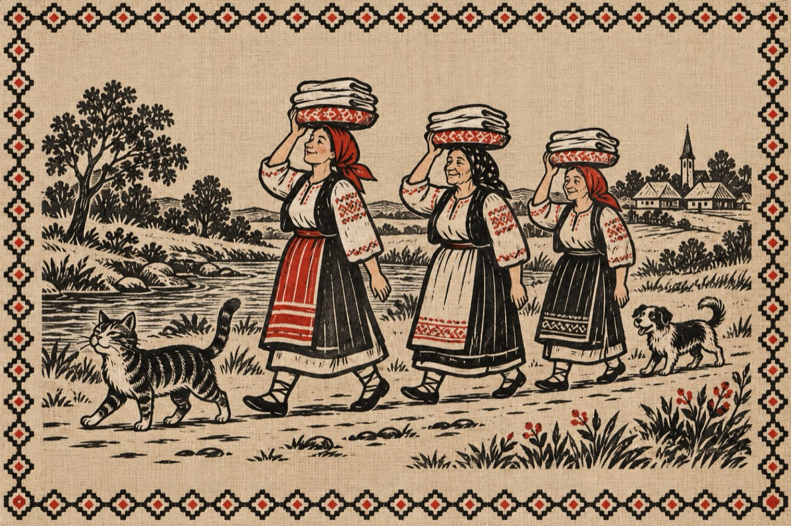

La vălău
Doina, Ana lui Săbău
Ș-or pus rufele pă cap
Șâ s-or fo’ dus la vălău
Tulai Doamne, purtate pâ un colac.
Făcând un șâr indian
Că o mărs șâ muierea lui Vârlan
Șâ cățălu și-un motan.
La vălău, curje apa cât o mână
Apă rece, curată și cristalină
Și le bat cu-o paletuță,
Rufele ce numa’, numa’
Să albesc precum e spuma.
Tăche sunt cu poale scurte
Ridicate pân’ la brâu
S-apleacă să nu le ude
Precum rufele din râu.
Doamne fericit mai iești
Când îți țâpi ochii pă ele
Șâ în adânc le privești
Cum flutură poalele.
Șâ cum rufele să bat
Când să leagănă din șale
Băgându-te în păcat
Nopțâle gândind la ele.
Dară lor nici că le pasă
Bat șâ cântă știu eu ce
Iară Doina e voioasă
Că s-or albit rufele.
Ap’i pleacă cătă casă
Tăt în șârul indian
Acum motanul e-n față
Io-n pârâu mă răcoream!
Vasile Groza